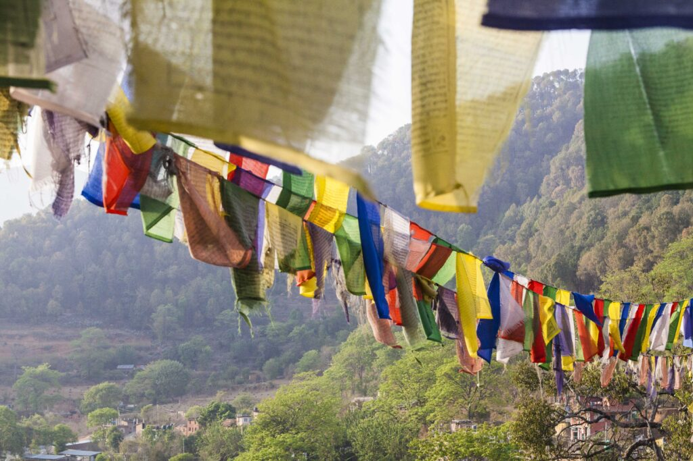

Fietsen, yoga en avontuur in de Himalaya
Cultuur en Mountainbike Reis rondom de Kathmandu vallei in Nepal
Ga mee op Cultuur en Mountainbike Reis in Nepal #mountainbiking #cycling #nepal #travel #reizen - YouTube
Michel Gebbinck
Deze reis loopt parallel aan de yogareis. De eerste twee dagen trekken we samen met de groep van die reis op. Als je wil kun je meedoen met de yoga- en meditatiesessies die door Marion worden gegeven.
Ook als je nog niet bekend bent met yoga en of meditatie is dit een mooie aanvulling en ondersteuning voor het mountainbiken en de reis. Maar als je alleen wil mountainbiken is dat natuurlijk ook prima, je mist dan verder niets van de ervaring.

Je kunt kiezen uit twee verschillende mountainbike-reizen, ieder met een eigen accent. De reis rondom Kathmandu Valley is toeganklijk. De expeditie naar Upper Mustang is extreem.
Steeds meer mensen plannen hun reis lang van tevoren. Wil je op de interesselijst voor een van de reizen, mail ons dan. Dan ontvang je als eerste info.
Alle details van de reizen vind je in de brochures via onderstaande links:
13 dagen. Kathmandu naar Lo Manthang en terug – een volledige mountainbike-expeditie door het hooggebergte van Nepal, met een doordachte acclimatisatie-opbouw en een route die je nergens anders ter wereld rijdt.
Gravel biking in Upper Mustang, Nepal
Michel Gebbinck
Watch on
Deze reis loopt parallel aan de yogareis. Hierdoor kun je samen met vrienden naar Nepal reizen – ieder met zijn eigen avontuur. Wil jij de trails verslinden terwijl je partner de yoga mat oprolt? Dat kan. Maar je kunt ook gewoon alleen of met je mountainbike-vrienden.

Deze reis wordt georganiseerd door Michel Gebbinck samen met Marion Werger. Michel heeft een jaar in Belize en Peru gewoond, veel gereisd en onder andere mountainbikereizen gemaakt in Nepal, Spanje, Zwitserland, Oostenrijk, Italië en Frankrijk. Michel werkt primair als zelfstandig consultant in Nederland en begeleidt daarnaast reizen van Marion.
Als partner van Marion heeft hij de mountainbikereizen naar Nepal ontwikkeld. Dit op wens van Marion om naast een focus op yogi’s, ook stellen en vrienden een gezamenlijke reis naar Nepal te kunnen laten maken, ieder met hun eigen accent van yoga of mountainbiken. Hij is opgeleid in mindfulness en meditatie en beoefend yoga, ademwerk en buitensporten.
| Meer informatie | www.mtbnepal.nl |
|---|---|
| Voorwaarden | De algemene voorwaarden voor deze reizen vindt je hier: Algemene voorwaarden |
Aan de telefoon of in een ontmoeting met een kop thee/koffie vertellen wij je graag over de reis.
Zie verder ook onze socials:
Bij iedere les of sessie is het mijn doel om mensen een gevoel van ’thuis komen’ te geven. Heb je een vraag of wil je een afspraak maken? Neem gerust contact met mij op.